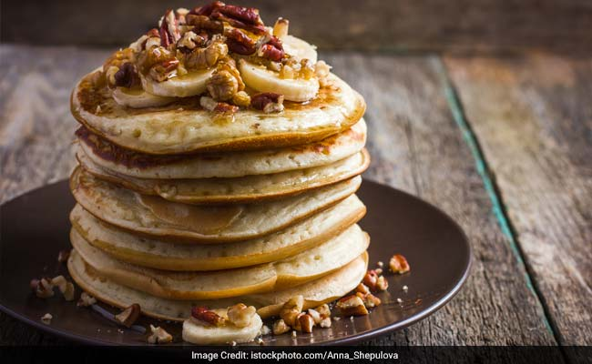
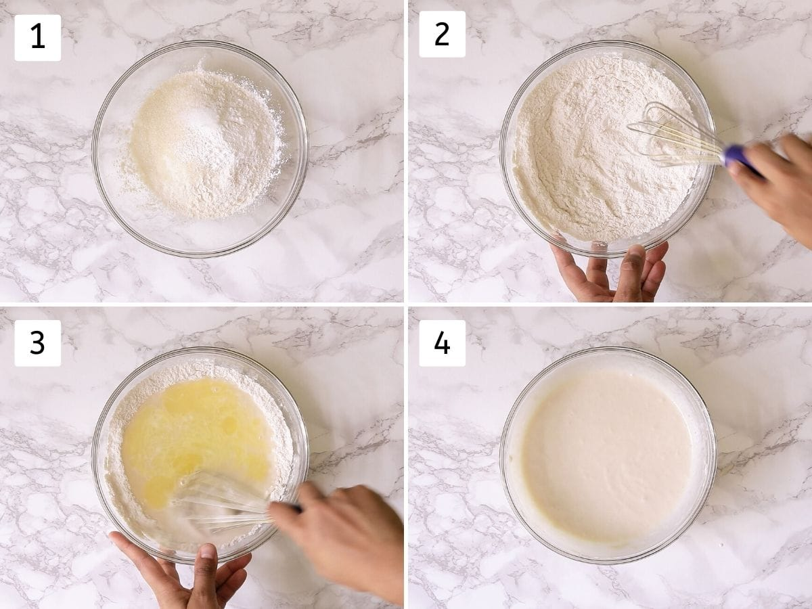

Morning are frequently stressful hours of the day. You get up, complete a few errands, quickly get dressed, and dash off to work—or you're busy getting your kids ready for school before you can even think about getting ready. The most crucial meal of the day, breakfast, frequently gets overlooked or even skipped entirely in the midst of the chaos. With these incredibly simple and fast breakfast recipes, we're attempting to ensure that you never skip breakfast again!
Eggless Pancakes Recipe
Total Cook: Time: 35 mins Prep Time: 10 mins Cook Time: 25 mins Recipe Servings: 10 Medium
Ingredient of Eggless Pancakes
1 cup Maida | 1 tsp Sugar | 1/2 Salt | 2 tsp Baking powder | 1 cup Milk | 3 tbsp Oil | 1 tsp Vanilla essence | To cook the pancakes Oil |
How to Make Eggless Pancakes
Mix flour, sugar, salt, baking powder, milk, oil, vanilla essence and enough water to form a smooth paste. The batter should be of a coating consistency. Add more water if required.

Take a frying pan of about 6'-7' diameter and heat oil in it. When the oil gets hot, turn over the pan and drain the excess oil off it. Increase the heat again, and pour batter in the pan.
Lower the heat and cover the pan for about 10 seconds. Uncover the pan. When edges of the pancake start lifting on its own, the pancake is done.

Just loosen the edges and turn the pan upside down over a plate and serve.
Key Ingredients: Maida, Sugar, Salt, Baking powder, Milk, Oil, Vanilla essence, Oil